S - the type of the success valueF - the type of the failure valuepublic interface Result<S,F>
On the one hand, a result object conveys one of these two mutually-exclusive states:
On the other hand, it also holds a non-null value whose meaning totally depends on the semantics defined by
the operation:
S.
F.
Result state can be determined via hasSuccess() or hasFailure().
Additional methods to unwrap the included value are provided, such as orElse() (return an
alternative success value if the operation failed) and ifSuccess() (execute a
block of code if the operation succeeded).
com.leakyabstractions.result,
ResultsResult is primarily, but not only, intended for use as a method return type whenever failure is
expected and recoverable, and where using null is likely to cause errors. A variable whose type is
Result should never itself be null; it should always point to a Result instance.Result:
final instance fields (though these may contain references to mutable objects);
equals, hashCode, and toString which are computed solely
from the values of the class's instance fields (and the members of the objects they reference), not from the
instance's identity;
x and y that are equal according to equals() produces no visible change in the
behavior of the class's methods;
equals(), they may also be equal according to ==;
final, and extend either Object or a hierarchy of abstract classes that declare no
instance fields or instance initializers and whose constructors are empty.
| Modifier and Type | Method and Description |
|---|---|
boolean |
equals(Object obj)
Indicates whether some other object is "equal to" this result.
|
Result<S,F> |
filter(Predicate<? super S> isAcceptable,
Function<? super S,? extends F> mapper)
If this is a successful result whose value does not match the given predicate, returns a new failed result with a
value produced by the given mapping function; otherwise returns this result.
|
<S2,F2> Result<S2,F2> |
flatMap(Function<? super S,? extends Result<? extends S2,? extends F2>> successMapper,
Function<? super F,? extends Result<? extends S2,? extends F2>> failureMapper)
Returns a new result produced by the appropriate
Result-bearing mapping function. |
<F2> Result<S,F2> |
flatMapFailure(Function<? super F,? extends Result<? extends S,? extends F2>> mapper)
If this is a failed result, returns a new result produced by the given,
Result-bearing mapping function;
otherwise returns a successful result with this result's success value. |
<S2> Result<S2,F> |
flatMapSuccess(Function<? super S,? extends Result<? extends S2,? extends F>> mapper)
If this is a successful result, returns a new result produced by the given,
Result-bearing mapping function; otherwise returns a failed result with this result's failure value. |
Optional<F> |
getFailure()
If this is a failed result, returns an optional containing its failure value; otherwise returns an empty
optional.
|
Optional<S> |
getSuccess()
If this is a successful result, returns an optional containing its success value; otherwise returns an empty
optional.
|
boolean |
hasFailure()
If this is a failed result, returns
true; otherwise false. |
int |
hashCode()
Returns the hash code of this result's success or failure value.
|
boolean |
hasSuccess()
If this is a successful result, returns
true; otherwise false. |
Result<S,F> |
ifFailure(Consumer<? super F> action)
If this is a failed result, performs the given action with its failure value; otherwise does nothing.
|
Result<S,F> |
ifSuccess(Consumer<? super S> action)
If this is a successful result, performs the given action with its success value; otherwise does nothing.
|
Result<S,F> |
ifSuccessOrElse(Consumer<? super S> successAction,
Consumer<? super F> failureAction)
If this is a successful result, performs the given success action; otherwise performs the given failure action.
|
<S2,F2> Result<S2,F2> |
map(Function<? super S,? extends S2> successMapper,
Function<? super F,? extends F2> failureMapper)
Returns a new result with the value produced by the appropriate mapping function.
|
<F2> Result<S,F2> |
mapFailure(Function<? super F,? extends F2> mapper)
If this is a failed result, returns a new failed result with the value produced by the given mapping function;
otherwise returns a successful result with this result's success value.
|
<S2> Result<S2,F> |
mapSuccess(Function<? super S,? extends S2> mapper)
If this is a successful result, returns a new successful result with the value produced by the given mapping
function; otherwise returns a failed result with this result's failure value.
|
S |
orElse(S other)
If this is a successful result, returns its success value; otherwise returns
other. |
S |
orElseMap(Function<? super F,? extends S> mapper)
If this is a successful result, returns its success value; otherwise returns the value produced by the given
mapping function.
|
Result<S,F> |
recover(Predicate<? super F> isRecoverable,
Function<? super F,? extends S> mapper)
If this is a failed result whose value matches the given predicate, returns a new successful result with a value
produced by the given mapping function; otherwise returns this result.
|
Stream<F> |
streamFailure()
If this is a failed result, returns a sequential stream containing only its failure value; otherwise returns an
empty stream.
|
Stream<S> |
streamSuccess()
If this is a successful result, returns a sequential stream containing only its success value; otherwise returns
an empty stream.
|
String |
toString()
Returns a non-empty string representation of this result suitable for debugging.
|
boolean hasSuccess()
true; otherwise false.
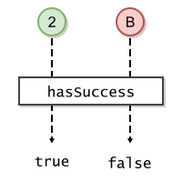
// Example
void testHasSuccess(Result<Integer, String> result) {
final boolean x = result.hasSuccess();
}
true if successful; otherwise falsehasFailure()boolean hasFailure()
true; otherwise false.
// Example
void testHasFailure(Result<Integer, String> result) {
boolean x = result.hasFailure();
}
true if failed; otherwise falsehasSuccess()Optional<S> getSuccess()
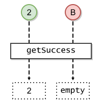
// Example
void testGetSuccess(Result<Integer, String> result) {
Optional<Integer> x = result.getSuccess();
}
getFailure()Optional<F> getFailure()
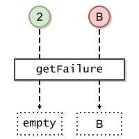
// Example
void testGetFailure(Result<Integer, String> result) {
Optional<String> x = result.getFailure();
}
getSuccess()S orElse(S other)
other.
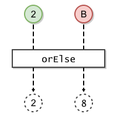
// Example
void testOrElse(Result<Integer, String> result) {
Integer other = 8;
Integer x = result.orElse(other);
}
other - the possibly-null alternative success valueotherorElseMap(Function)S orElseMap(Function<? super F,? extends S> mapper)
The mapping function will be applied to this result's failure value to produce an alternative success value.
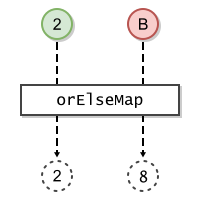
// Example
void testOrElseMap(Result<Integer, String> result) {
Function<String, Integer> mapper = f -> 8;
Integer x = result.orElseMap(mapper);
}
mapper - the mapping function that produces the possibly-null alternative success valueNullPointerException - if this is a failed result and mapper is nullorElse(Object)Stream<S> streamSuccess()
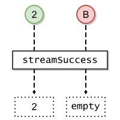
// Example
void testStreamSuccess(Result<Integer, String> result) {
Stream<Integer> x = result.streamSuccess();
}
Stream<F> streamFailure()
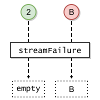
// Example
void testStreamFailure(Result<Integer, String> result) {
Stream<String> x = result.streamFailure();
}
Result<S,F> ifSuccess(Consumer<? super S> action)
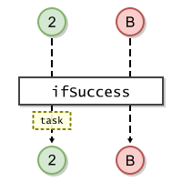
// Example
void testIfSuccess(Result<Integer, String> result) {
Consumer<Integer> task = s -> {};
Result<Integer, String> x = result.ifSuccess(task);
}
action - the action to be applied to this result's success valueNullPointerException - if this is a successful result and action is nullifFailure(Consumer),
ifSuccessOrElse(Consumer, Consumer)Result<S,F> ifFailure(Consumer<? super F> action)
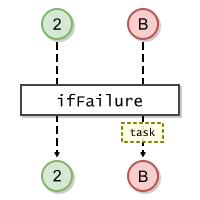
// Example
void testIfFailure(Result<Integer, String> result) {
Consumer<Integer> task = f -> {};
Result<Integer, String> x = result.ifFailure(task);
}
action - the action to be applied to this result's failure valueNullPointerException - if this is a failed result and action is nullifSuccess(Consumer),
ifSuccessOrElse(Consumer, Consumer)Result<S,F> ifSuccessOrElse(Consumer<? super S> successAction, Consumer<? super F> failureAction)
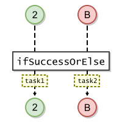
// Example
void testIfSuccessOrElse(Result<Integer, String> result) {
Consumer<Integer> task1 = s -> {};
Consumer<String> task2 = f -> {};
Result<Integer, String> x = result.ifSuccessOrElse(task1, task2);
}
successAction - the action to be applied to this result's success valuefailureAction - the action to be applied to this result's failure valueNullPointerException - if this is a successful result and successAction is null; or if it is failed and failureAction is nullifFailure(Consumer),
ifSuccess(Consumer)Result<S,F> filter(Predicate<? super S> isAcceptable, Function<? super S,? extends F> mapper)
The mapping function will be applied to this result's success value to produce the failure value.
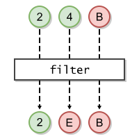
// Example
void testFilter(Result<Integer, String> result) {
Predicate<Integer> isAcceptable = s -> s < 3;
Function<Integer, String< mapper = s -> "E";
Result<Integer, String> x = result.filter(isAcceptable, mapper);
}
isAcceptable - the predicate to apply to this result's success valuemapper - the mapping function that produces the failure valuemapper if this is a successful result whose value
does not match the given predicate; otherwise this resultNullPointerException - if this is a successful result and isAcceptable is null; or if its success value is not acceptable and mapper is null or returns nullrecover(Predicate, Function)Result<S,F> recover(Predicate<? super F> isRecoverable, Function<? super F,? extends S> mapper)
The mapping function will be applied to this result's failure value to produce the success value.
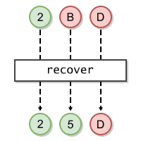
// Example
void testRecover(Result<Integer, String> result) {
Predicate<String> isRecoverable = "B"::equals;
Function<String, Integer> mapper = f -> 5;
Result<Integer, String> x = result.recover(isRecoverable, mapper);
}
isRecoverable - the predicate to apply to this result's failure valuemapper - the mapping function that produces the success valuemapper if this is a failed result whose value
matches the given predicate; otherwise this resultNullPointerException - if this is a failed result and isRecoverable is null; or if its failure value is recoverable and mapper is null or returns nullfilter(Predicate, Function)<S2> Result<S2,F> mapSuccess(Function<? super S,? extends S2> mapper)
The mapping function will be applied to this result's success value to produce the new success value. The type of the new success value may be different from this result's.
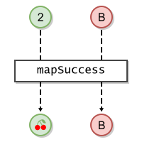
// Example
void testMapSuccess(Result<Integer, String> result) {
Function<Integer, Fruit> mapper = s -> CHERRIES;
Result<Fruit, String> x = result.mapSuccess(mapper);
}
S2 - the type of the value returned by mappermapper - the mapping function that produces the new success valuemapper if this is a successful result;
otherwise a failed result with this result's failure valueNullPointerException - if this is a successful result and mapper is null or returns
nullmap(Function, Function),
mapFailure(Function)<F2> Result<S,F2> mapFailure(Function<? super F,? extends F2> mapper)
The mapping function will be applied to this result's failure value to produce the new failure value. The type of the new failure value may be different from this result's.
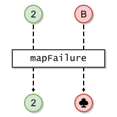
// Example
void testMapFailure(Result<Integer, String> result) {
Function<String, Suit> mapper = f -> CLUBS;
Result<Integer, Suit> x = result.mapFailure(mapper);
}
F2 - the type of the value returned by mappermapper - the mapping function that produces the new failure valuemapper if this is a failed result; otherwise a
successful result with this result's success valueNullPointerException - if this is a failed result and mapper is null or returns
nullmap(Function, Function),
mapSuccess(Function)<S2,F2> Result<S2,F2> map(Function<? super S,? extends S2> successMapper, Function<? super F,? extends F2> failureMapper)
Depending on this result's state, one of the two given functions will be applied to its success or failure value to produce a new value. The types of the new success/failure values may be different from this result's.
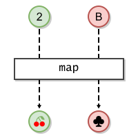
// Example
void testMap(Result<Integer, String> result) {
Function<Integer, Fruit> mapper1 = s -> CHERRIES;
Function<String, Suit> mapper2 = f -> CLUBS;
Result<Fruit, Suit> x = result.map(mapper1, mapper2);
}
S2 - the type of the value returned by successMapperF2 - the type of the value returned by failureMappersuccessMapper - the mapping function that produces a success valuefailureMapper - the mapping function that produces a failure valuesuccessMapper or failureMapperNullPointerException - if this is a successful result and successMapper is null or returns null; or if this is a failed result and failureMapper is null or
returns nullmapFailure(Function),
mapSuccess(Function)<S2> Result<S2,F> flatMapSuccess(Function<? super S,? extends Result<? extends S2,? extends F>> mapper)
Result-bearing mapping function; otherwise returns a failed result with this result's failure value.
The mapping function will be applied to this result's success value to produce a new result. State and success type may be different from this result's.
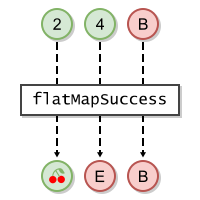
// Example
void testFlatMapSuccess(Result<Integer, String> result) {
Function<Integer, Result<Fruit, String>> mapper =
s -> s < 3 ? Results.success(CHERRIES) : Results.failure("E");
Result<Fruit, String> x = result.flatMapSuccess(mapper);
}
S2 - the success type of the result returned by mappermapper - the mapping function that produces a new resultmapper if this is a successful result; otherwise a failed result with this
result's failure value.NullPointerException - if this is a successful result and mapper is null or returns
nullflatMap(Function, Function),
flatMapFailure(Function)<F2> Result<S,F2> flatMapFailure(Function<? super F,? extends Result<? extends S,? extends F2>> mapper)
Result-bearing mapping function;
otherwise returns a successful result with this result's success value.
The mapping function will be applied to this result's failure value to produce a new result. State and failure type may be different from this result's.
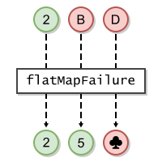
// Example
void testFlatMapFailure(Result<Integer, String> result) {
Function<String, Result<Integer, Suit>> mapper =
f -> f.equals("B") ? Results.success(5) : Results.failure(CLUBS);
Result<Integer, Suit> x = result.flatMapFailure(mapper);
}
F2 - the failure type of the result returned by mappermapper - the mapping function that produces a new resultmapper if this is a failed result; otherwise a successful result with this
result's success value.NullPointerException - if this is a failed result and mapper is null or returns
nullflatMap(Function, Function),
flatMapSuccess(Function)<S2,F2> Result<S2,F2> flatMap(Function<? super S,? extends Result<? extends S2,? extends F2>> successMapper, Function<? super F,? extends Result<? extends S2,? extends F2>> failureMapper)
Result-bearing mapping function.
Depending on this result's state, one of the two given functions will be applied to its success or failure value to produce a new result. State and types may be different from this result's.
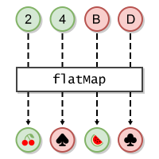
// Example
void testFlatMap(Result<Integer, String> result) {
Function<Integer, Result<Fruit, Suit>> mapper1 =
s -> s < 3 ? success(CHERRIES) : failure(SPADES);
Function<String, Result<Fruit, Suit>> mapper2 =
f -> f.equals("B") ? success(WATERMELON) : failure(CLUBS);
Result<Fruit, Suit> x = result.flatMap(mapper1, mapper2);
}
S2 - the success type of the result returned by the given functionsF2 - the failure type of the result returned by the given functionssuccessMapper - the mapping function that produces a new result if this is a successful resultfailureMapper - the mapping function that produces a new result if this is a failed resultsuccessMapper or failureMapperNullPointerException - if this is a successful result and successMapper is null or returns null; or if this is a failed result and failureMapper is null or
returns nullflatMapFailure(Function),
flatMapSuccess(Function)boolean equals(Object obj)
The other object is considered equal if:
Result and;
equals().
equals in class Objectobj - the object to be tested for equalitytrue if the other object is "equal to" this object; otherwise falsehashCode()int hashCode()
String toString()
The exact presentation format is unspecified and may vary between implementations and versions.